เริ่มเรียน ทำแบบทดสอบ รับแต้ม และใช้คูปอง
ภาพอธิบายขั้นตอน ไม่ใช่ภาพหน้าจอของระบบปฏิบัติการ
ไม่ต้องติดตั้งโปรแกรมเพิ่ม ใช้Chrome/Edgeและบัญชีที่หน่วยงานจัดให้ ภาพทุกภาพเป็นข้อมูลสมมติจากการทดสอบจริง
รุ่น 1.0.0 · ปรับปรุง 10 ตุลาคม 2569
สำหรับผู้เริ่มต้น · ภาพประกอบและข้อมูลสมมติจากชุดทดสอบ
ขั้นตอน / หัวข้อ 1
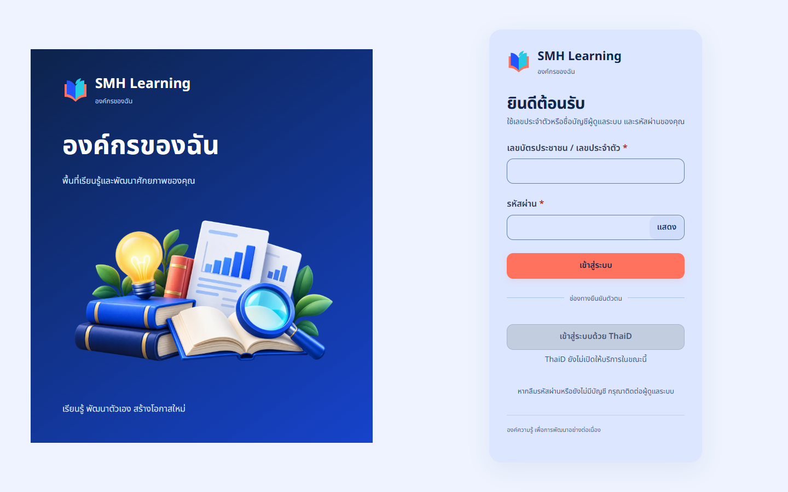
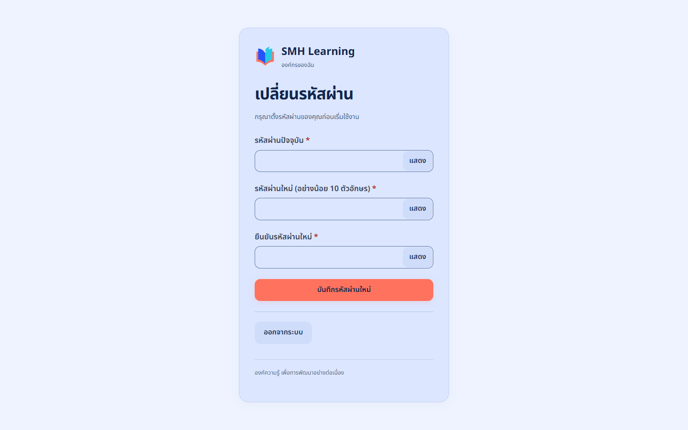
ขั้นตอน / หัวข้อ 2
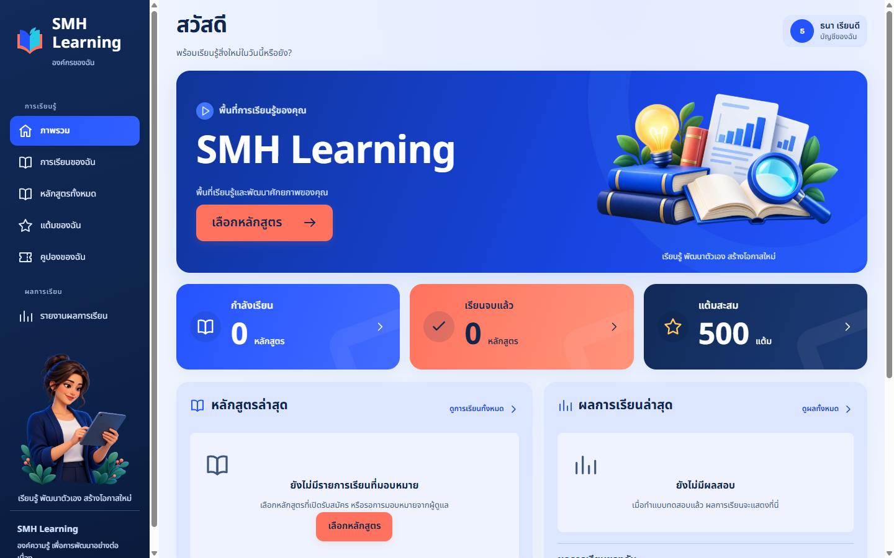
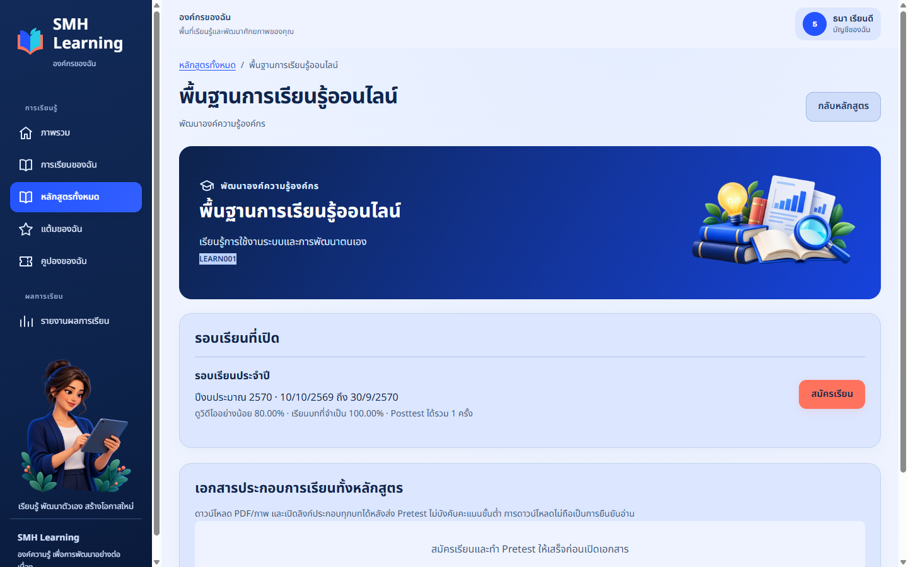
ขั้นตอน / หัวข้อ 3
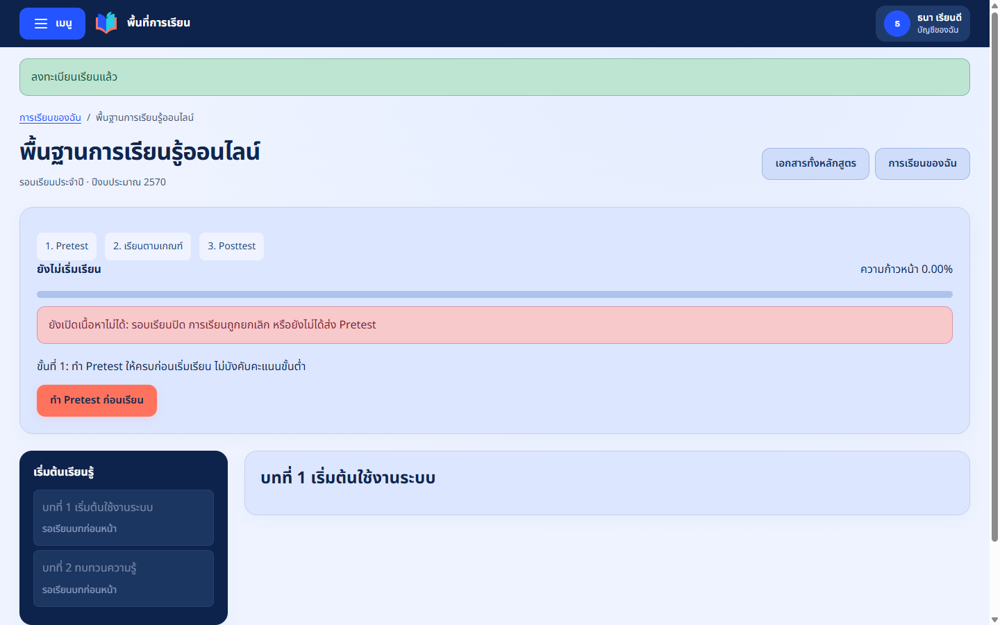
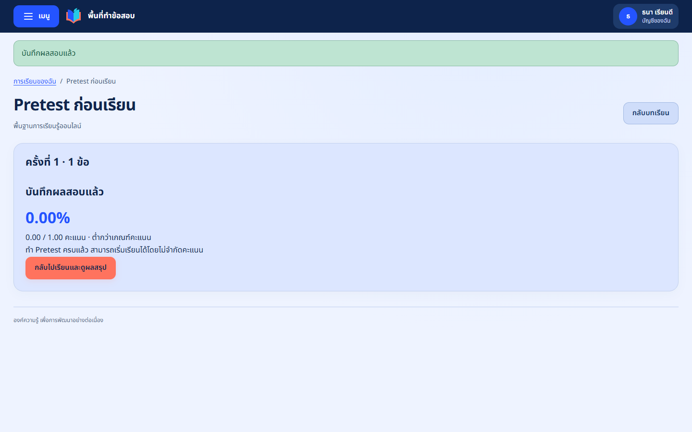
ขั้นตอน / หัวข้อ 4
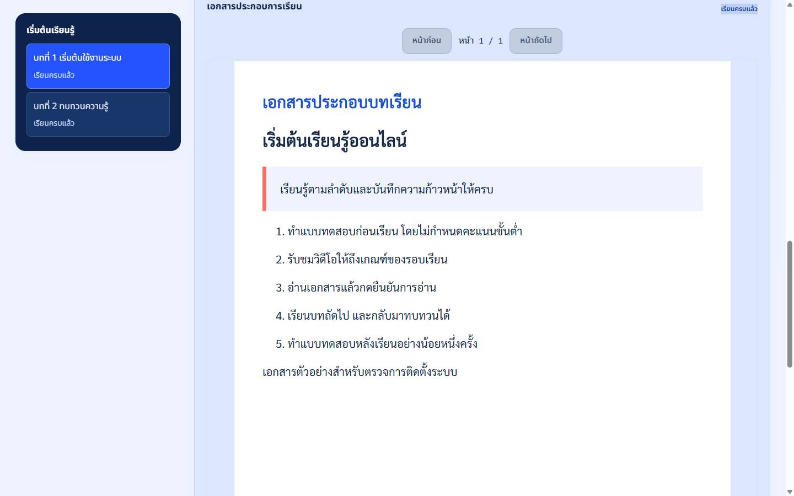
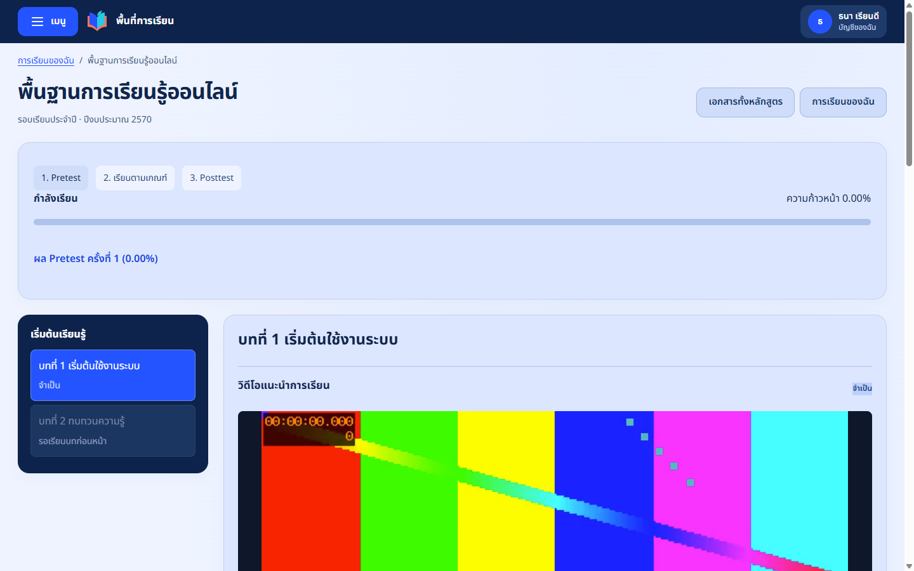
ขั้นตอน / หัวข้อ 5
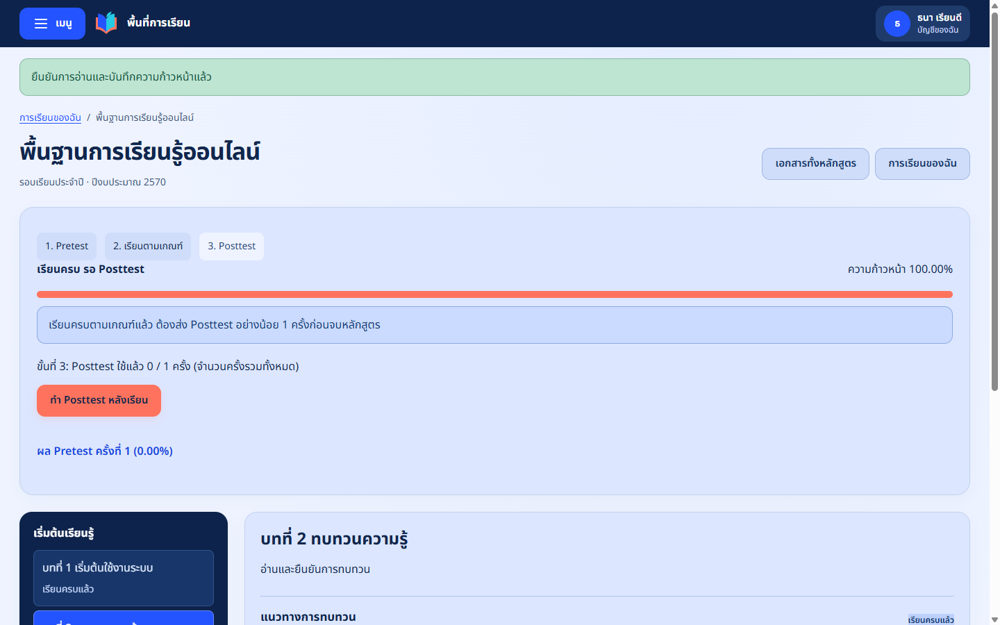
ถ้าไม่มีคลิป บทอ่านก็ต้องเปิดอ่านและยืนยันตามที่Instructorกำหนด ไม่จำเป็นต้องมีวิดีโอทุกบท
ขั้นตอน / หัวข้อ 6
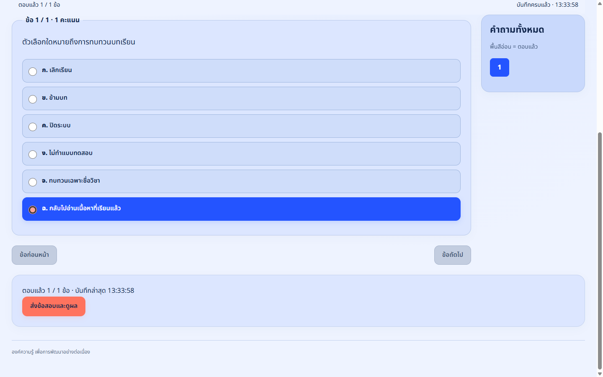
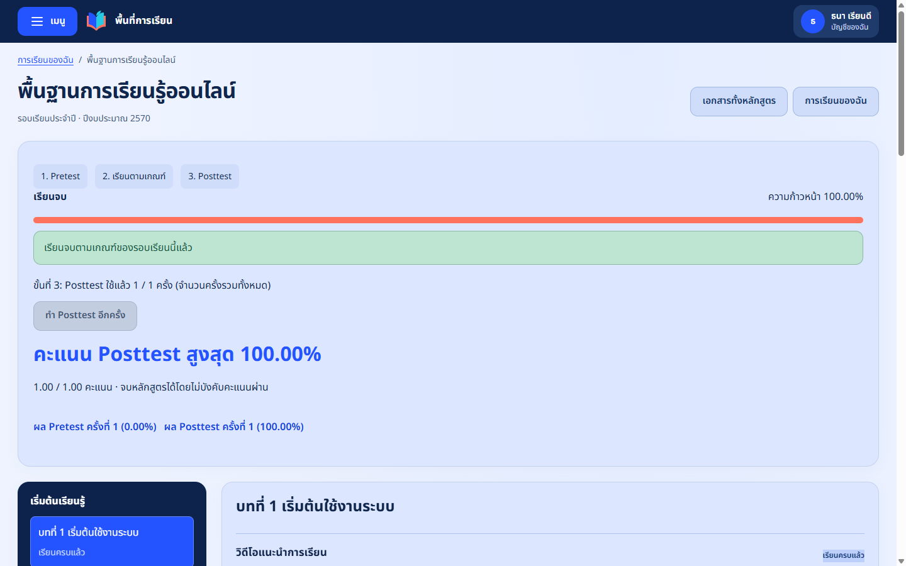
ขั้นตอน / หัวข้อ 7
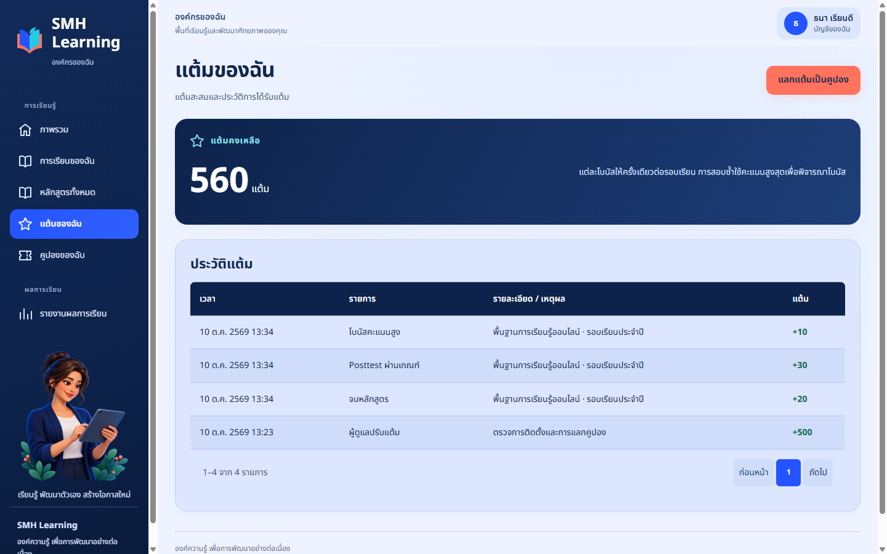
ขั้นตอน / หัวข้อ 8
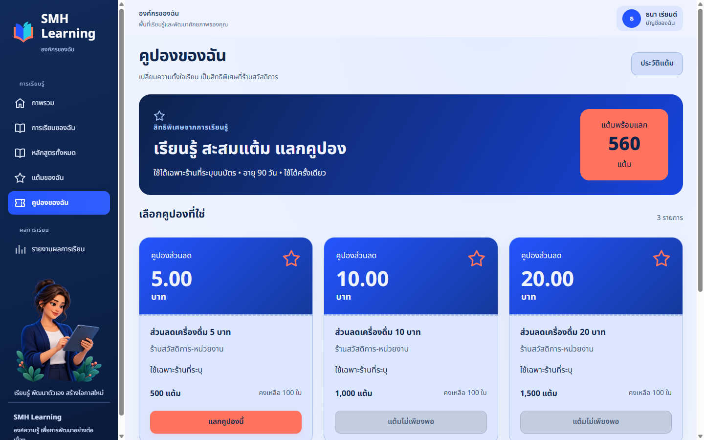
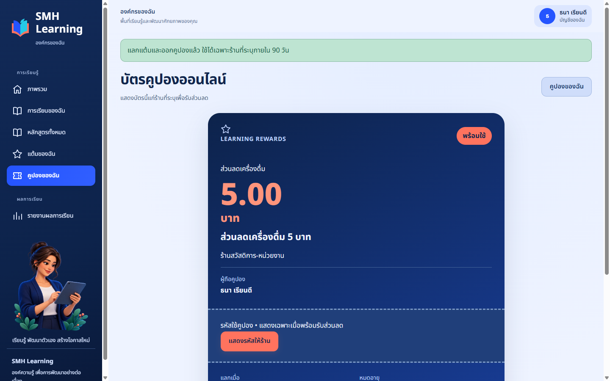
ขั้นตอน / หัวข้อ 9
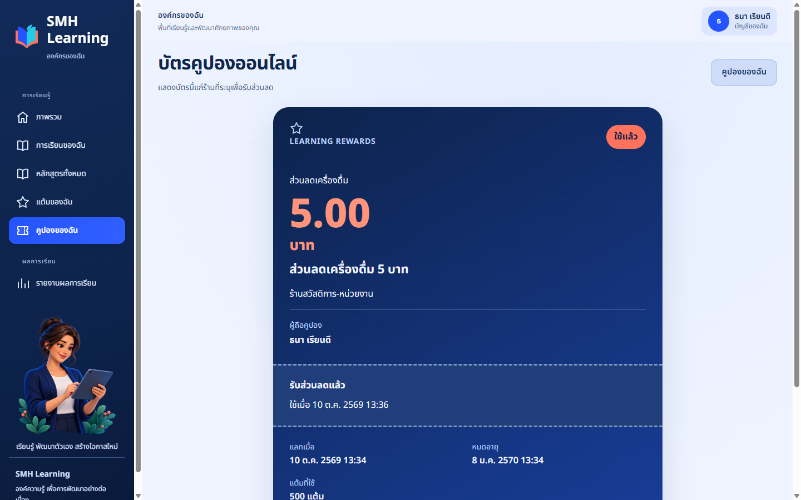
จัดทำจากซอร์สรุ่น 1.0.0 และการติดตั้งจริงใน Ubuntu 24.04.5 บน WSL2 วันที่ 10 ตุลาคม 2569 ไม่ใช้ภาพหน้าจอ AlmaLinux หรือ Windows ที่ไม่ได้ถ่ายจริง รูปแบบแผนภาพมีคำกำกับแยกจากภาพหน้าจอ
ใช้ฟอนต์ Sarabun ของ Google Fonts ภายใต้ SIL Open Font License เพราะเครื่องจัดทำไม่มี TH SarabunPSK ไฟล์ใบอนุญาตอยู่ใน assets/fonts/OFL.txt
ดู ผลการทดสอบ และ ซอร์ส GitHub ก่อนติดตั้งจริง